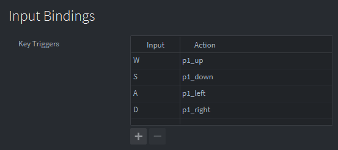

Tutorials for 2D games projects
Worm | Handling the inputs.
- In the assets panel, inside the 'input' folder, double click, 'game.input_binding'.
- Set the key triggers as follows:

- In the asset panel, double click, 'worm1.script'.
- Update the on_input function to respond to the new key triggers.
function on_input(self, action_id, action)
if action_id == hash("p1_up") and action.pressed then
table.insert(self.input_queue, {x = 0, y = 1})
elseif action_id == hash("p1_down") and action.pressed then
table.insert(self.input_queue, {x = 0, y = -1})
elseif action_id == hash("p1_left") and action.pressed then
table.insert(self.input_queue, {x = -1, y = 0})
elseif action_id == hash("p1_right") and action.pressed then
table.insert(self.input_queue, {x = 1, y = 0})
end
end
Notice we have decided not to use pre-hashing again for this tutorial. This is just so we can focus on the important elements of this particular game, and as it happens this game isn't particularly demanding!
The traditional snake game is different from many other games because every key press matters. A player is likely to want to make sharp turns and therefore press two keys in very quick succession. We must process these keys in the exact order they arrive and ensure none are missed. To achieve this, every time a key is pressed we'll add it to a queue and then process the data in the queue during the update function. This will give us more control than relying on the event handler at the expense of a little more complexity.
If the player presses the W key, it adds a new element to the input_queue table with x = 0 and y = 1. This means move up since the x position does not change and the y position is a positive number.
Similar actions are taken for S, A and D keys respectively.
- Create a new function to process the inputs.
function process_inputs(self)
-- Get the next direction from the input queue
local new_direction = table.remove(self.input_queue, 1)
-- If there is an input to process
if new_direction then
-- Only change the direction if it is allowed
if not (new_direction.x == -self.direction.x or new_direction.y == -self.direction.y) then
self.direction = new_direction
end
end
end
new_direction is a local variable that is the element popped from the front of the input queue at index 1.
Lua tables are not zero-indexed by default. You can use index 0 if you want to, but that's not how the language handles the data structure.
new_direction will contain a .x and .y property if there was an item to remove. Note that in Lua if there is no item in the queue table.remove does not generate a runtime error. It simply returns nothing.
Therefore we can use if new_direction to check the Boolean state of new_direction: it has values or it doesn't.
If it is a new direction to process the direction the worm is travelling (stored in self.direction) is updated to be new_direction.
- Save the changes by pressing CTRL-S or 'File', 'Save All'.
Nothing will happen yet because we haven't written the code to move the worm and change direction. The next stage is to move the worm. Stage 4c >
 Craig'n'Dave | Version 1.3
Craig'n'Dave | Version 1.3